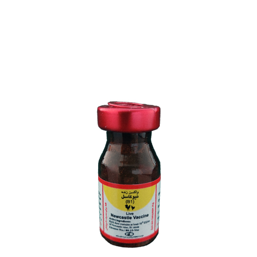

واکسن زنده نیوکاسل سویه B1 ، موسسه رازی
📝نوع واکسن:
زنده - لیوفیلیزه
📝ترکیب:
این واکسن محتوی ویروس لنتوژن نیوکاسل سویه B1، کشت داده شده در تخم مرغ هایSPF جنین دار می باشد و هر دز واکسن دارای حداقل عیار EID50 106 ویروس می باشد.
📝موارد مصرف:
این واکسن برای ایمن سازی فعال اولیه علیه بیماری نیوکاسل در مرغان بومی و گله های صنعتی طیور تهیه شده است.
📝دز و نحوه مصرف:
تجویز زیر نظر دکتر دامپزشک و طبق دستورالعمل زیر انجام گیرد:
◽️قطره چشمی: برای فرآوری هر 1000 دز از واکسن لیوفیلیزه در ۲۵ میلی لیتر سالین نرمال یا آب مقطر استریل کاملا حل شده سپس با استفاده از یک قطره چکان استاندارد یک قطره در چشم هر پرنده چکانده شود. این روش بهترین شیوه برای اطمینان از مایه کوبی انفرادی بوده و بر دیگر روش ها ارجحیت دارد.
◽️آب آشامیدنی: واکسن را در آب آشامیدنی حل کنید. میزان رقت به سن پرنده بستگی دارد. به این صورت که 1000 دز از واکسن برای مایه کوبی پرندگان ۱۰ روزه بایستی در حدود ۱۰ لیتر آب خنک، تمیز و عاری از کلرین یا دیگر مواد شیمیایی ضد عفونی کننده کاملا حل شود و برای هر یک روز سن اضافی پرنده یک لیتر آب اضافی در نظر گرفته شود. در این روش هنگام مصرف واکسن، شیر بدون چربی به نسبت 2/5 در هزار به آب آشامیدنی اضافه شود.
◽️روش اسپری: هر 1000 دز واکسن در300-100 میلی لیتر سالین نرمال یا آب مقطر خنک، تمیز و عاری از مواد ضدعفونی کننده حل شود. میزان رقت به سن پرنده و نوع دستگاه اسپری بستگی دارد.
📝موارد منع مصرف:
پرندگانی که از نظر کلینیکی بیمار و یا در اثر حمل و نقل ضعیف شده اند و یا علائم بیماری دارند نباید مایه کوبی شوند.
📝عوارض جانبی:
ندارد.
📝شرایط نگهداری:
در دمای 2+ تا 8 +درجه سانتی گراد نگهداری شود.
📝بسته بندی:
این واکسن در ویال های قهوه ایی 2500 ،1000 و 5000 دزی با بر چسب مشخصات عرضه می شود.
📝توصیه های لازم در زمان مایه کوبی:
◽️این واکسن در تمام گله های طیور در سن 7-1 روزگی توصیه می شود.
◽️قبل از مایه کوبی از سلامت گله اطمینان حاصل شود.
◽️حتی الامکان پرندگان یک گله همزمان مایهکوبی شوند.
◽️این واکسن را با هیچ یک از واکسن های زندۀ دیگر مخلوط نکرده و فاصله زمانی مایهکوبی دو واکسن متفاوت رعایت شود.
📝احتیاطات لازم:
◽️واکسن از شبکه توزیع رسمی اخذ شود.
◽️تلقیح واکسن پس از انقضای تاریخ مصرف ممنوع می باشد.
◽️واکسن حل شده بایستی در مدت 2 ساعت مصرف شود.
◽️پرندگانی که با روش آشامیدنی مایه کوبی می شوند بایستی 2-1 ساعت قبل از مایه کوبی از دسترسی به آب محروم شوند.
◽️هرگز واکسن را در معرض نور مستقیم خورشید و یا حرارت قرار ندهید.
◽️احتمال دارد پس از مایه کوبی، در پرندگانی که از نظر مایکوپلاسما مثبت هستند و یا در گله های با مدیریت بهداشتی ناکارآمد بوده اند عوارض بسیار خفیف و زودگذر تنفسی مشاهده شود.
◽️از آنجایی که این واکسن محتوی ویروس زنده است، ویال های خالی و یا ویال هایی که باز شده ولی به طور کامل مصرف نشده اند باید در یک محلول ضدعفونی کنندۀ قوی غوطه ور شوند.